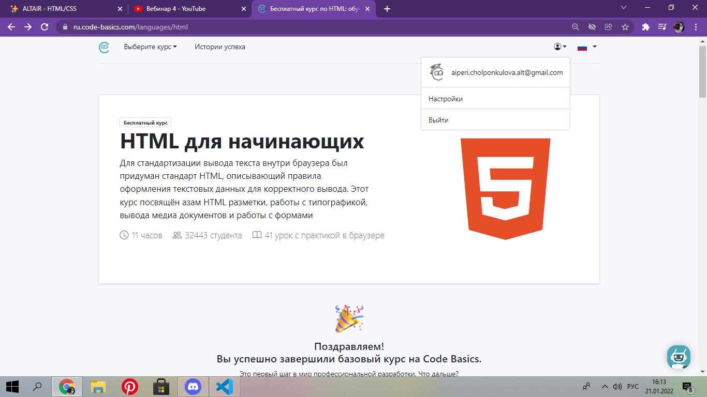
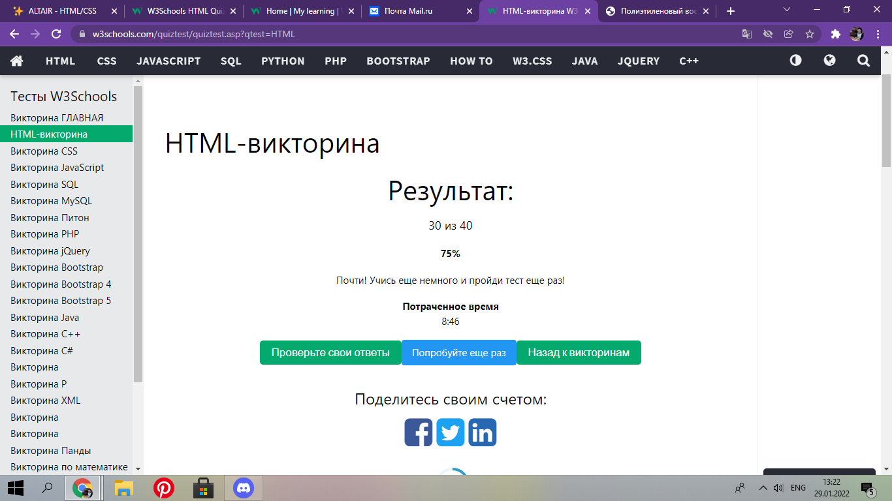

Чолпонкулова Айпери
Мен Чолпонкулова Айпери Чолпонкуловна , 1991-жылы 5-июнда Нарын областынын , Кочкор районуна караштуу, Кум-Добо айылында торолгом. 4 бир туугандын улуусу. Балалык чагым ошол эле айылда откон. Мектепти да ошол эле айылда окуп бутком.Окууну буткон чон окуу жайга тапшырып ,окууну ийгиликтуу тапшырып, иштеп журуп турмуш жолуна аттандым. Азыркы учурда бир кыз , бир уулдун бактылуу энеси, суйуктуу жармын.
Жондомдуулугум
Азыркы учурда
Жылдыз Академиясынын
студенти.HTML , CSS окуп жаткан учурум. Кесибим боюнча тилчи(кытай
тили).
Мен
Жусуп Баласын атындагы Кыргыз Улуттук Университетине караштуу
Кыргыз-Кытай институтунда
кытай тили боюнча - "Бакалавр лингвист."
Курс учурунда алган жетишкендигим.
HTML боюнча сертификат

HTML боюнча тесттин результаты

Тилдер
- Англис тили - мектептик дээнгелде
- Орус тили - эркин
- Кыргыз тили - озумдун тилим
- Кытай тили - эркин
Кодко мисалдар
<h3>Тилдер<h3>
<ul>
<li>Англис тили - мектептик дээнгелде<li>
<li>Орус тили - эркин<li>
<li>Кыргыз тили - озумдун тилим<li>
<li>Кытай тили - эркин<li>
<ul>
Портфолио
Жакынкы арада болот турган портфолио

-
Бул экинчи портфолио
-
Учунчу портфолио
Байланышуу
-
Жашаган жерим
Чуй областы, Жайыл району,Кара-Балта шаары. -
Телефон
+996554-36-55-59 -
Почта
cholponkulova.ayperi@mail.ru